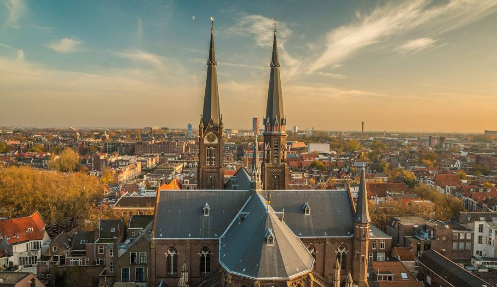

Top 3 Restaurants in Delft
Geboren en getogen in het prachtige Delft, heb ik een bijzondere band met deze historische stad. Als liefhebber van lekker eten heb ik door de jaren heen bijna elk restaurant hier wel een keer uitgeprobeerd. Van knusse bistro's tot verfijnde fine dining, ik heb het allemaal mogen ervaren. Delft biedt een unieke mix van culinaire hoogstandjes en gezellige eetcafés, en dat maakt het ontdekken van nieuwe plekken hier altijd een feestje. Mijn passie voor goed eten en het delen van deze ervaringen heeft me geïnspireerd om mijn favoriete plekken in deze stad te delen. Of je nu zin hebt in een romantisch diner, een snelle hap, of een uitgebreide culinaire reis, Delft heeft voor ieder wat wils. Deze top 3-restaurants in Delft zijn mijn absolute aanraders, en ik weet zeker dat ze je zullen verrassen. Eet smakelijk en geniet van alles wat deze geweldige stad te bieden heeft!
1. Restaurant Het Vermeertje
Geniet van verfijnde gerechten geïnspireerd door het werk van Johannes Vermeer. Dit restaurant combineert kunst en culinaire perfectie.
2. Huszár
Een gezellige plek met een heerlijke kaart vol lokale en duurzame producten. Perfect voor een ontspannen avondje uit.
3. Restaurant Van der Dussen
Authentieke smaken in een stijlvolle, historische omgeving. Een aanrader voor liefhebbers van klassieke gerechten.
Wil je meer ontdekken over deze restaurants? Bezoek onze restaurantgids.